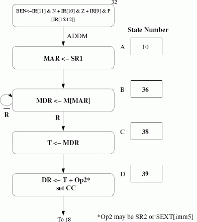
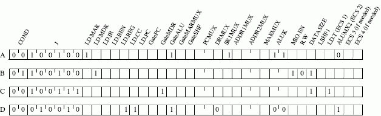

The ISA is the contract between the hardware and the software. The microarchitecture is a particular implementation of an ISA. Compiler does not need to know any information about the microarchitecture.
x1000] + MEM[x1002] = x1A0E + x0C11 = x261Fx1000] + MEM[x1002] = x0E1A + x110C = x1F26The comments indicate the number of cycles each instruction takes:
.ORIG X3000
AND R0, R0, #0 ; 9 cycles
LEA R3, NUM ; 9 cycles
LDW R3, R3, #0 ; 15 cycles
LDW R1, R3, #0 ; 15 cycles
ADD R2, R1, #0 ; 9 cycles
LOOP ADD R0, R0, R1 ; 9 cycles
ADD R2, R2, #-1 ; 9 cycles
BRP LOOP ; 10 cycles for Taken / 9 for Not Taken
STW R0, R3, #1 ; 15 cycles
HALT ; 35 cycles
NUM .FILL x4000
.ENDTo calculate the square of k, the inner loop gets executed k times. The branch is taken (k-1) times and not taken one time.
Number of cycles = 9 + 9 + 15 + 15 + 9 + (k-1)*(9 + 9 + 10) + 1*(9 + 9 + 9) + 15 + 35 = 28k + 106After we load the value of k, check if it is negative. If so, take the 2's complement before entering the loop.
k can range from -255 to +255
State 32. We can get rid of the LD_BEN signal altogether and always load enable the BEN register.
The value that is loaded into BEN in state 32 could instead be calculated in state 0, but this would add delay for calculating the next state and would probably force the cycle time to be increased.
A = IR[15:12]
B = IR[11]&N + IR[10]&Z + IR[9]&P (i.e., the old BEN signal)Filled in state sequence:
There are many possible state numberings, but state numbers must be chosen from 24, 34, and 36-63. The state number for C must differ from the state number for B only in the bit1 position, and bit1 must be 0 for state B. For example, if state B is 36 (100100), state C must be 38 (100110). The one-bit signal X is the Ready bit (R) from memory.
We need a 16-bit temporary register (T) which gets its inputs from the system bus. We need a signal LD.T (extra control signal 1) to control when to load this register. This register holds the data that is fetched from memory. We also need a mux in front of the A input of the ALU. This mux should select between SR1 and the output of the temporary register. We need a control signal for the select line of this mux (ALUMX2 - extra control signal 2).
Filled in microinstructions:
All other signals are 0. The J bits will depend on the state numbering chosen in part (a). The J bits for states A and B must correspond to the state number for B, the J bits for state C must correspond to the state number for D, and the J bits for D must be 18 (010010). The bit encodings for control signals are the same as specified in Lab 3.
Truth table for the WE Logic:
| MAR[0] | R.W | DATA.SIZE | WE1 | WE0 |
|---|---|---|---|---|
| 0 | RD | Byte | 0 | 0 |
| 0 | RD | Word | 0 | 0 |
| 0 | WR | Byte | 0 | 1 |
| 0 | WR | Word | 1 | 1 |
| 1 | RD | Byte | 0 | 0 |
| 1 | RD | Word | 0 | 0 |
| 1 | WR | Byte | 1 | 0 |
| 1 | WR | Word | 0 | 0 |
RD = 0 WR = 1; Byte = 0 Word = 1
WE0 = (MAR[0]') AND (R.W)
WE1 = R.W AND (MAR[0] XOR DATA.SIZE)Truth table for the Address Control Logic:
| MIO.EN | R.W | MAR | MEM.EN | INMUX | LD.KBSR | LD.DSR | LD.DDR |
|---|---|---|---|---|---|---|---|
| 0 | X | X | 0 | X | 0 | 0 | 0 |
| 1 | R | xFE00 |
0 | KBSR | 0 | 0 | 0 |
| 1 | R | xFE02 |
0 | KBDR | 0 | 0 | 0 |
| 1 | R | xFE04 |
0 | DSR | 0 | 0 | 0 |
| 1 | R | xFE06 |
0 | X | 0 | 0 | 0 |
| 1 | R | OTHER | 1 | MEMORY | 0 | 0 | 0 |
| 1 | W | xFE00 |
0 | X | 1 | 0 | 0 |
| 1 | W | xFE02 |
0 | X | 0 | 0 | 0 |
| 1 | W | xFE04 |
0 | X | 0 | 1 | 0 |
| 1 | W | xFE06 |
0 | X | 0 | 0 | 1 |
| 1 | W | OTHER | 1 | X | 0 | 0 | 0 |
In the wrong version, instructions JSR R7 and JSRR R7 would execute incorrectly. Their base register (R7) would be overwritten with the value of the PC in state 4. Thus, the addresses generated in states 20 and 21 would come out wrong.
We cannot tell the size of the MAR, since it depends on the number of memory locations and does not depend on the addressability (the number of bits in each location). For the MDR, first consider the LC3b. The LC3b is Byte (8 bit) addressable with an MDR size of 16 bits. We cannot tell the size of the MDR based on addressability either.
Each register (DR, SR1, and SR2) would have to be specified with five bits. With the steering bit, the total number of bits used would be 16 – leaving no bits for the opcode.
Assume an ADD operation is executed like this in the pipeline:
| 1 | 2 | 3 | 4 | 5 | 6 | 7 |
|---|---|---|---|---|---|---|
| F | D | A | A | A | A | S |
and a MUL operation is executed like this in the pipeline:
| 1 | 2 | 3 | 4 | 5 | 6 | 7 | 8 | 9 |
|---|---|---|---|---|---|---|---|---|
| F | D | M | M | M | M | M | M | S |
F: Fetch, D: Decode, A: Execute stage (for ADD), M: Execute stage for MUL, S: Store result (Write-back)
| 1 | 2 | 3 | 4 | 5 | 6 | 7 | 8 | 9 | 10 | 11 | 12 | 13 | 14 | 15 | 16 | 17 | 18 | 19 | 20 | 21 | 22 | 23 | 24 | 25 | 26 |
|---|---|---|---|---|---|---|---|---|---|---|---|---|---|---|---|---|---|---|---|---|---|---|---|---|---|
| F | D | M | M | M | M | M | M | S | |||||||||||||||||
| F | D | D | D | D | D | D | D | A | A | A | A | S | |||||||||||||
| F | F | F | F | F | F | F | D | A | A | A | A | S | |||||||||||||
| F | D | M | M | M | M | M | M | S | |||||||||||||||||
| F | D | D | D | D | D | D | D | A | A | A | A | S | |||||||||||||
| F | F | F | F | F | F | F | D | M | M | M | M | M | M | S |
Execution time: 26 cycles
| 1 | 2 | 3 | 4 | 5 | 6 | 7 | 8 | 9 | 10 | 11 | 12 | 13 | 14 | 15 | 16 | 17 | 18 | 19 | 20 | 21 | 22 | 23 | 24 |
|---|---|---|---|---|---|---|---|---|---|---|---|---|---|---|---|---|---|---|---|---|---|---|---|
| F | D | M | M | M | M | M | M | S | |||||||||||||||
| F | D | D | D | D | D | D | A | A | A | A | S | ||||||||||||
| F | F | F | F | F | F | D | A | A | A | A | S | ||||||||||||
| F | D | M | M | M | M | M | M | S | |||||||||||||||
| F | D | D | D | D | D | D | A | A | A | A | S | ||||||||||||
| F | F | F | F | F | F | D | M | M | M | M | M | M | S |
Execution time: 24 cycles
Pipeline with scoreboarding and one adder and one multiplier (assuming one instruction fetched per cycle):
The adder and multiplier are not pipelined and there is no data forwarding:
| 1 | 2 | 3 | 4 | 5 | 6 | 7 | 8 | 9 | 10 | 11 | 12 | 13 | 14 | 15 | 16 | 17 | 18 | 19 | 20 | 21 | 22 | 23 | 24 | 25 | 26 | 27 | 28 | 29 |
|---|---|---|---|---|---|---|---|---|---|---|---|---|---|---|---|---|---|---|---|---|---|---|---|---|---|---|---|---|
| F | D | M | M | M | M | M | M | S | ||||||||||||||||||||
| F | D | D | D | D | D | D | D | A | A | A | A | S | ||||||||||||||||
| F | F | F | F | F | F | F | D | D | D | D | A | A | A | A | S | |||||||||||||
| F | F | F | F | D | M | M | M | M | M | M | S | |||||||||||||||||
| F | D | D | D | D | D | D | D | A | A | A | A | S | ||||||||||||||||
| F | F | F | F | F | F | F | D | M | M | M | M | M | M | S |
Execution time: 29 cycles
The adder and multiplier are not pipelined and there is data forwarding:
| 1 | 2 | 3 | 4 | 5 | 6 | 7 | 8 | 9 | 10 | 11 | 12 | 13 | 14 | 15 | 16 | 17 | 18 | 19 | 20 | 21 | 22 | 23 | 24 | 25 | 26 | 27 |
|---|---|---|---|---|---|---|---|---|---|---|---|---|---|---|---|---|---|---|---|---|---|---|---|---|---|---|
| F | D | M | M | M | M | M | M | S | ||||||||||||||||||
| F | D | D | D | D | D | D | A | A | A | A | S | |||||||||||||||
| F | F | F | F | F | F | D | D | D | D | A | A | A | A | S | ||||||||||||
| F | F | F | D | M | M | M | M | M | M | S | ||||||||||||||||
| F | D | D | D | D | D | D | A | A | A | A | S | |||||||||||||||
| F | F | F | F | F | F | D | M | M | M | M | M | M | S |
Execution time: 27 cycles
The adder and multiplier are pipelined and there is no data forwarding:
| 1 | 2 | 3 | 4 | 5 | 6 | 7 | 8 | 9 | 10 | 11 | 12 | 13 | 14 | 15 | 16 | 17 | 18 | 19 | 20 | 21 | 22 | 23 | 24 | 25 | 26 |
|---|---|---|---|---|---|---|---|---|---|---|---|---|---|---|---|---|---|---|---|---|---|---|---|---|---|
| F | D | M | M | M | M | M | M | S | |||||||||||||||||
| F | D | D | D | D | D | D | D | A | A | A | A | S | |||||||||||||
| F | F | F | F | F | F | F | D | A | A | A | A | S | |||||||||||||
| F | D | M | M | M | M | M | M | S | |||||||||||||||||
| F | D | D | D | D | D | D | D | A | A | A | A | S | |||||||||||||
| F | F | F | F | F | F | F | D | M | M | M | M | M | M | S |
Execution time: 26 cycles
The adder and multiplier are pipelined and there is data forwarding:
| 1 | 2 | 3 | 4 | 5 | 6 | 7 | 8 | 9 | 10 | 11 | 12 | 13 | 14 | 15 | 16 | 17 | 18 | 19 | 20 | 21 | 22 | 23 | 24 |
|---|---|---|---|---|---|---|---|---|---|---|---|---|---|---|---|---|---|---|---|---|---|---|---|
| F | D | M | M | M | M | M | M | S | |||||||||||||||
| F | D | D | D | D | D | D | A | A | A | A | S | ||||||||||||
| F | F | F | F | F | F | D | A | A | A | A | S | ||||||||||||
| F | D | M | M | M | M | M | M | S | |||||||||||||||
| F | D | D | D | D | D | D | A | A | A | A | S | ||||||||||||
| F | F | F | F | F | F | D | M | M | M | M | M | M | S |
Execution time: 24 cycles
Pipeline diagram:
| Instruction | 1 | 2 | 3 | 4 | 5 | 6 | 7 | 8 | 9 | 10 | 11 | 12 | 13 | 14 | 15 |
|---|---|---|---|---|---|---|---|---|---|---|---|---|---|---|---|
| Start of first iteration (R1 is even) | |||||||||||||||
| STW | F | D | E | E | E | S | |||||||||
| ADD | F | D | E | E | E | S | |||||||||
| AND | F | D | E | E | S | ||||||||||
| BRz | F | D | D | E | S | ||||||||||
| ADD | F | D | E | E | E | S | |||||||||
| ADD | F | D | E | E | E | S | |||||||||
| BRp | F | D | D | D | E | S | |||||||||
| End of the first iteration (R1 is odd now) | |||||||||||||||
| STW | F | ||||||||||||||
The loop takes the same number of cycles to execute for even and odd values of R1. Each iteration takes 14 cycles in the steady state. There are 5 iterations for even values of R1 and 4 iterations for odd values of R1. The total number of cycles is:
The extra 1 cycle comes from the last iteration (Store result stage of the BRp instruction).
Pipeline diagram:
| Instruction | 1 | 2 | 3 | 4 | 5 | 6 | 7 | 8 | 9 | 10 | 11 | 12 | 13 | 14 | 15 | 16 |
|---|---|---|---|---|---|---|---|---|---|---|---|---|---|---|---|---|
| Start of first iteration (R1 is even) | ||||||||||||||||
| STW | F | D | E | E | E | S | ||||||||||
| ADD | F | D | E | E | E | S | ||||||||||
| AND | F | D | E | E | S | |||||||||||
| BRz | F | D | D | E | S | |||||||||||
| ADD | F | F | D | E | E | E | S | |||||||||
| ADD | F | D | E | E | E | S | ||||||||||
| BRp | F | D | D | D | E | S | ||||||||||
| End of the first iteration (R1 is odd now) | ||||||||||||||||
| STW | F | F | F | D | E | E | E | S | ||||||||
The loop takes the same number of cycles to execute for even and odd values of R1. Each iteration takes 13 cycles but 3 cycles can be overlapped with the next iteration. The total number of cycles is:
BRz instruction will always be predicted not taken. It is taken when R1 is even. So it will be mispredicted when R1 is even and correctly predicted when R1 is odd. The following diagram shows three consecutive iterations of the loop. In the first iteration, BRz is mispredicted, in the second iteration it is correctly predicted.
The first BRp instruction is always predicted taken. It is always predicted correctly. The second BRp instruction is also always predicted taken. It is mispredicted only once in the last iteration of the loop.
1 2 3 4 5 6 7 8 9 10 11 12 13 14 15 16 17 18 19 20 21 22 23 24 25 26 27 28 29 30 31 32 33
-------------------------------------------------------------------------------------------------------------- Start of first iteration (R1 is even)
STW F | D | E | E | E | S
ADD F | D | E | E | E | S
AND F | D | E | E | S
BRz F | D | D | E | S (Mispredicted)
ADD R1, R1, #3 F | F | D | Flushed
ADD R5, R5, #-1 F | Flushed
ADD R1, R1, #1 F | D | E | E | E | S
ADD R7, R7, #-1 F | D | E | E | E | S
BRp DOIT F | D | D | D | E | S (Correctly predicted)
------------------------------------------------------------------------------------------------------------- Start of second iteration (R1 is odd)
STW F | F | F | D | E | E | E | S
ADD F | D | E | E | E | S
AND F | D | E | E | S
BRz F | D | D | E | S (Correctly predicted)
ADD R1, R1, #3 F | F | D | E | E | E | S
ADD R5, R5, #-1 F | D | E | E | E | S
BRp DOIT F | D | D | D | E | S (Correctly predicted)
------------------------------------------------------------------------------------------------------------ Third iteration (R1 is even)
STW F | F | F | D | E | E | S
ADD F | D | E | E | E | S
AND F | D | E | E | S
BRz F | D | D | E | S (Mispredicted)
ADD R1, R1, #3 F | F | D | Flushed
ADD R5, R5, #-1 F | Flushed
ADD R1, R1, #1 F | D | E | E | E | S
ADD R7, R7, #-1 F | D | E | E | E | S
BRp DOIT F | D | D | D | E | S (Correctly predicted)
<--------- beginning of the loop ----><------------------------ steady state (22 cycles) ------------------------------------>
Loop steady state is shown above. It takes 22 cycles and it is repeated 4 times. The beginning of the loop (until the steady state) takes 10 cycles as shown above. The end of the loop (part of the last iteration which is not in steady state) takes 5 more cycles to execute. The total number of cycles is:
Prediction accuracies for each branch are:
Combined branch prediction accuracy = 12/18 = 67%
The states could be state nos 20 and 12 when you are loading PC from the register. Although the '0' offset can be acquired from the instruction as well using the least 6 significant bits